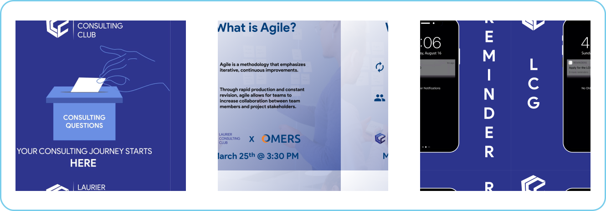

EXPLORE MY INTERESTS

EXPLORE MY INTERESTS
TECH
As a double-degree student, I able to bridge the gap between technical and non-technical members of a team. My passion for programming began in high school and drove me to pursue a degree in computer science. Although my interest in tech began in school, it has grown exponentially through my work experience and attending tech events.
PROGRAMMING LANGUAGES
Python, Java, VBA, HTML, C
EXPERIENCE
Technical Developer Analyst
Everlink Payment Services
(MAY - AUGUST 2020)
With no prior Git experience, I was able to lead the Git repositories integration by iteratively defining and testing the process to be used, as well as creating documentation.
Instructional Assistant
Wilfrid Laurier University
(JANUARY - APRIL 2020)
In 2 labs a week, I graded students and guided them in implementing Data Structures using Python.
MARKETING
Since high school, I have had the opportunity to create marketing material for various student organizations. Over the years, I have not only been able to improve my design skills, but also have gained experience leading campaigns and trying different marketing strategies.
SAMPLE WORK
STRATEGY
As somebody who has always loved solving problems, when I did my first case competition in tenth grade, I instantly became obsessed with exploring business problems and that eventually drove me to pursue a Business degree. In university, I continue to compete in case competitions and joined the Laurier Consulting Club to learn more about consulting and help other students who want to pursue a career in consulting.
SALES
I became passionate about sales in tenth grade when I joined my Junior Achievement company’s sales team and in later years, participated in tradeshows. My interest in sales strengthened throughout university.
For AIESEC in Laurier, I led a team to cold-contact and run sales meetings with businesses in the Waterloo region to pitch our internship program (bringing international interns to their team). In doing so, I also trained my team to manage our account using Salesforce. I managed the relationships with our key stakeholders: the companies and the interns. I remember how nervous I was in tenth grade before every cold call, but I am proud of how I used that experience to become better in future roles.
HOBBIES
TRAVEL
I have always loved going to new places, even if it is just somewhere in my city that I have never been to (especially new restauarants) . After my first year of university, I flew to Beijing, a city I had never visited, to complete an internship with only my suitcase to accompany me. I learned so much during this experience and it gave me a newfound appreciation for independent travelling.

MUSIC
I began playing piano when I was really young and over the years have picked up a mix of other instruments. Interestingly, I think my love for music relates to my passion for programming, as learning the basics of each tool allows me to craft a variety of different things. My favourite way to de-stress is learning to play a new song and concerts are some of my favourite events to attend.